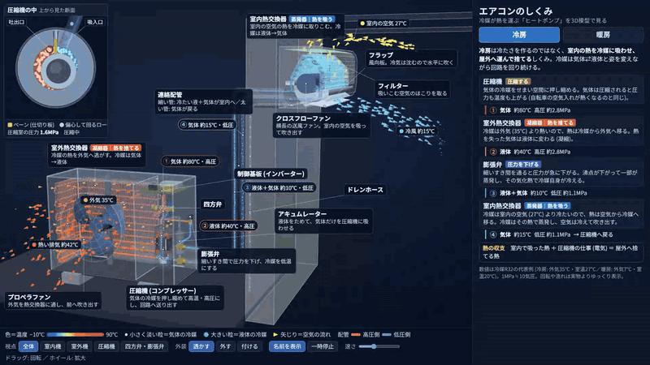
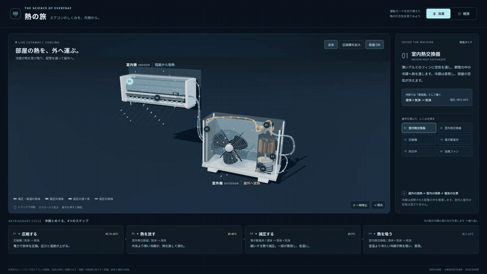
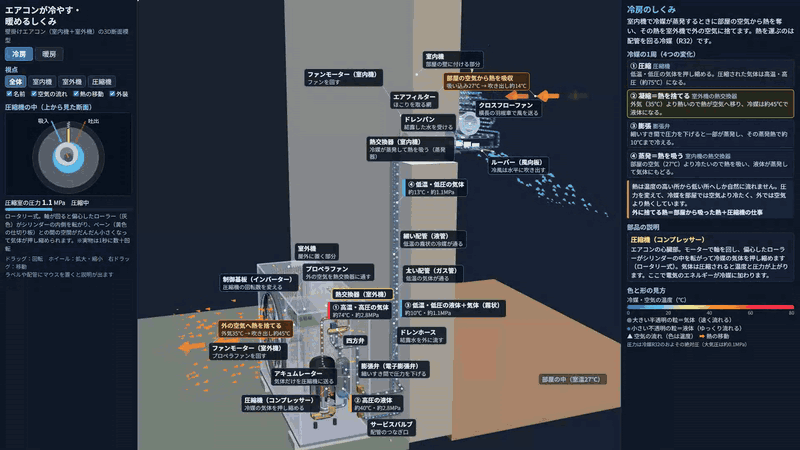
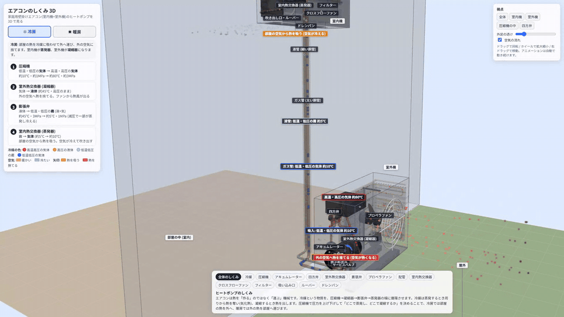
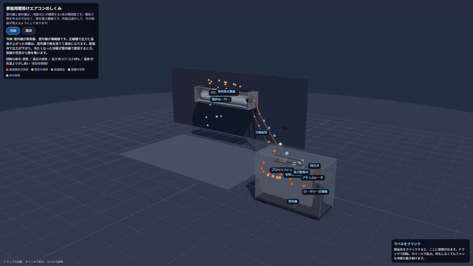

同じ指示を 1 回だけ、5 つの AI モデルに出して作らせた Three.js のページです。カードを押すと、その作品がブラウザで動きます (ドラッグで回転・ホイールで拡大)。道具は Hermes Agent。各モデル 1 回ずつなので順位は付けていません。並びは固定の順です。2026 年 11 月 10 日。

Claude Fable 5.2採点 19/19暖房で開く:aircon-fable52.html?mode=heat

GPT-6 Astra採点 19/19暖房で開く:aircon-astra.html?mode=heat

Claude Opus 5.5採点 18/19暖房で開く:aircon-opus55.html?mode=heat

Claude Fable 5.1採点 18/19暖房で開く:aircon-fable51.html?mode=heat

Grok 4.7採点 16/19暖房で開く:aircon-grok.html?mode=heat